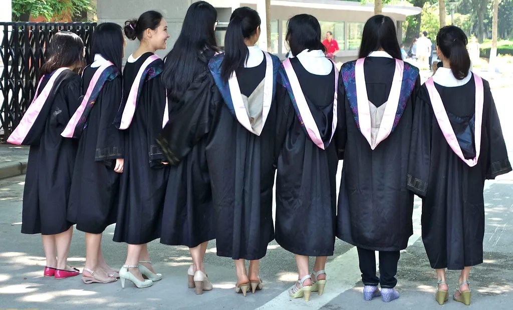

2026년 8월 대학정보공시…학생 1인당 교육비 2073만원·사립대 적립금 12조 돌파
교육부와 한국대학교육협의회가 28일 '2026년 8월 대학정보공시 분석 결과'를 발표했다. 지난해 대학들이 학생 한 명에게 쓴 돈과 나눠준 장학금은 모두 늘었지만, 4년제 대학과 전문대학 사이의 투자 격차는 더 벌어진 것으로 나타났다. 대학정보공시는 학생과 학부모가 대학을 고를 때 참고할 수 있도록 재정·교육 여건 지표를 학교별로 공개하는 제도로, 매년 4월과 8월에 정기적으로 갱신된다.
2025년 일반대학과 교육대학의 학생 1인당 교육비는 결산 기준 2072만8000원으로, 전년(2020만2000원)보다 52만6000원(2.6%) 증가했다. 설립 유형별로는 국공립대학이 2669만1000원으로 2.7%, 사립대학이 1886만9000원으로 2.6% 늘었다. 지역별로는 수도권 대학이 2228만7000원으로 3.5% 오른 반면, 비수도권 대학은 1938만6000원으로 1.7% 증가하는 데 그쳐 상승 폭에서 차이를 보였다.

학생 1인당 교육비는 대학이 교육과 연구, 시설 등에 투입한 총액을 재학생 수로 나눈 값으로, 교육 여건을 가늠하는 핵심 지표로 쓰인다. 수도권과 비수도권, 국공립과 사립 사이의 격차가 지표에 그대로 드러나면서, 재정 기반이 약한 지방 사립대의 여건이 상대적으로 뒤처진다는 지적이 다시 나온다. 전체 금액이 늘었다고 해도 물가 상승분을 감안하면 실질 투자 여력은 제자리걸음이라는 분석도 있다.
장학금은 큰 폭으로 늘었다. 2025년 일반대학과 교육대학의 장학금 총액은 5조3982억원으로 전년(5조291억원)보다 3691억원(7.3%) 증가했다. 재원별로는 국가장학금이 3조5232억원으로 전체의 65.3%를 차지했고, 대학이 자체 재원으로 지급한 교내 장학금이 1조6773억원(31.1%)으로 뒤를 이었다. 이 밖에 사설·기타 장학금이 1624억원(3.0%), 지방자치단체 장학금이 353억원(0.6%)이었다.
사립대학이 미래 지출에 대비해 쌓아둔 교비회계 적립금은 4년제와 전문대를 합쳐 12조2000억원을 넘어서며 역대 최대 규모를 기록했다. 다만 이번 공시에서는 4년제 일반대학이 학생 교육비와 교수 연구비를 모두 늘린 반면, 전문대학은 두 항목이 모두 줄어든 것으로 확인됐다. 학령인구 감소로 신입생 확보 경쟁이 치열해진 가운데, 재정 여력에 따라 교육 투자의 방향이 갈리는 양극화 흐름이 뚜렷해진 셈이다.
전문대학의 투자 위축은 특히 우려되는 대목이다. 전문대는 지역 산업 현장에 필요한 인력을 길러내는 역할을 맡고 있지만, 학생 수 감소의 충격을 4년제보다 먼저, 더 크게 받는 구조다. 교육비와 연구비가 동시에 줄면 실습 장비 교체나 산학협력 프로그램이 축소돼 교육의 질에도 영향을 줄 수 있다는 지적이 나온다.
대학가에서는 10년 넘게 이어진 등록금 동결과 물가 상승이 겹치면서 재정 압박이 누적됐다는 목소리가 크다. 반대로 학생과 학부모 입장에서는 등록금 부담이 여전히 크고 장학금 확대가 체감되지 않는다는 불만도 있다. 정부는 이번 공시 자료를 토대로 지방대와 전문대의 재정난, 대학 간 교육 여건 격차를 점검하고 지원 방안을 검토할 방침이다. 공시된 항목별 세부 수치는 대학알리미 누리집에서 학교별로 확인할 수 있다.